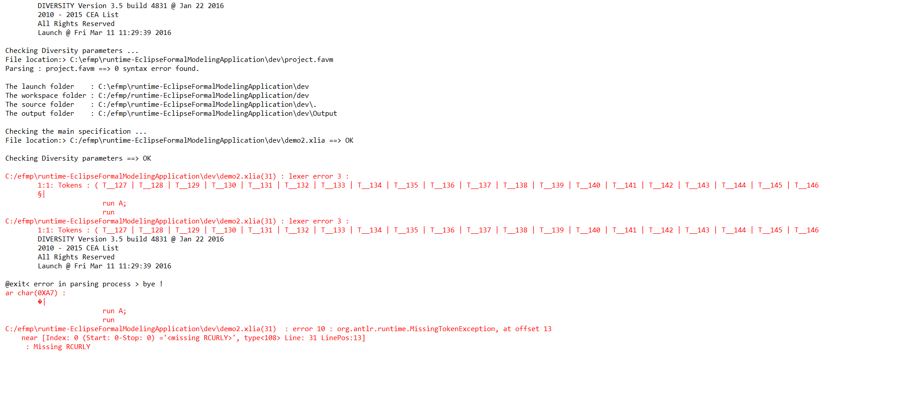

Considering 2 processes : P and Q, with atomic sequence, each process must not be able to fail (except for external reasons (bugs, OS-related issues such as lack of memory...)).
We execute first P and then Q (non-reflexive operator).
Applying this on our most basic example, the "@moe:" section looks like :

UNFORTUNATELY ON THE 2016/02/11 THE "|§|" scheduling DOES NOT WORK FOR THIS PARTICULAR CASE OF BASIC EXAMPLE. ERROR MESSAGES APPEAR WHEN LAUNCHING THE SYMBOLIC EXECUTION :
